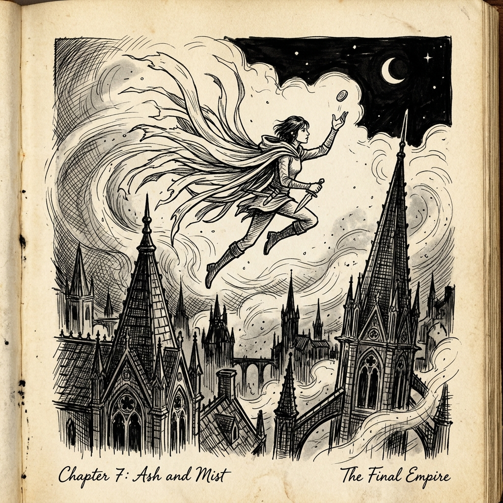

Ash Falling from the Sky
Mistborn: The Final Empire opens in a world where the prophesied hero failed a millennium ago. The ash falls perpetually from red skies; plants are brown; the Skaa are enslaved beneath the immortal iron fist of the Lord Ruler.
In this suffocating dystopia, Kelsier does not simply plot assassination. He orchestrates a myth.

Vin: The Traumatized Street Urchin
While Kelsier is the flamboyant architect of rebellion, Vin is the emotional anchor of the trilogy:
- Beaten and betrayed by her brother Reen, her instinct is radical isolation: anyone who loves you will eventually sell you out.
- Over three books, Vin’s greatest superpower is not burning pewter, brass, or duralumin—it is learning to trust Elend and her crew.
Allomancy is brilliant kinetic physics, but Sanderson’s real magic is human redemption.